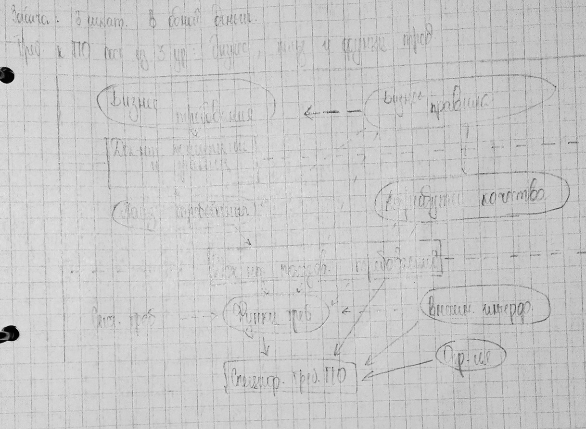

Преподаватель: Лукьянов Павел Владимирович
???@mail.ru
89102640153
Когда группа людей начинает обсуждать требования, они обычно начинают с проблем терминологии. Разные эксперты, говоря об одном и том же документе, могут называть
его пользовательскими требованиями к ПО, бизнес требованиями, функциональными требованиями, системными требованиями, требованиями к продукту или проекту.
Имена, которые они применяют к различным требованиям обычно различаются, заказчики зачастую считают, что определённое имя требования - это высокоуровневая концепция продукта, предназначенная для разработчика, те полагают, что в отношении
клиентов - это детализированная разработка интерфейса пользователя.
Такое многообразие ведёт к возгоранию пуканов и проблемам коммуникации.
Десятки лет спустя после появления программирования для компьютеров,
специалисты в ИТ до сих пор спорят о том, что же такое требование.
Консультант Брайан Лоренс предположил, что требование это нечто, что предположил дизайнер. Другое определение заключается в том, что продукт
должен обеспечить выгоду заинтересованному лицу. Ем Сомерли и Пит Соер: требование - это спецификация того, что должно быть
реализовано, в них описано поведение системы, свойства или её аттрибуты.
Они могут быть ограничениями в процессе разработки системы. Это определение
учитывает различные типы информации, которые в совокупности называются требованиями. Требования охватывают как внешнее поведение системы и как видение пользователя, а также представления разработчика о некоторых внутренних
характеристиках.
Из-за такого большого числа разных типов информации и требований нам требуется
единый набор написаний, изменяющий слишком перегруженный термин требование.
